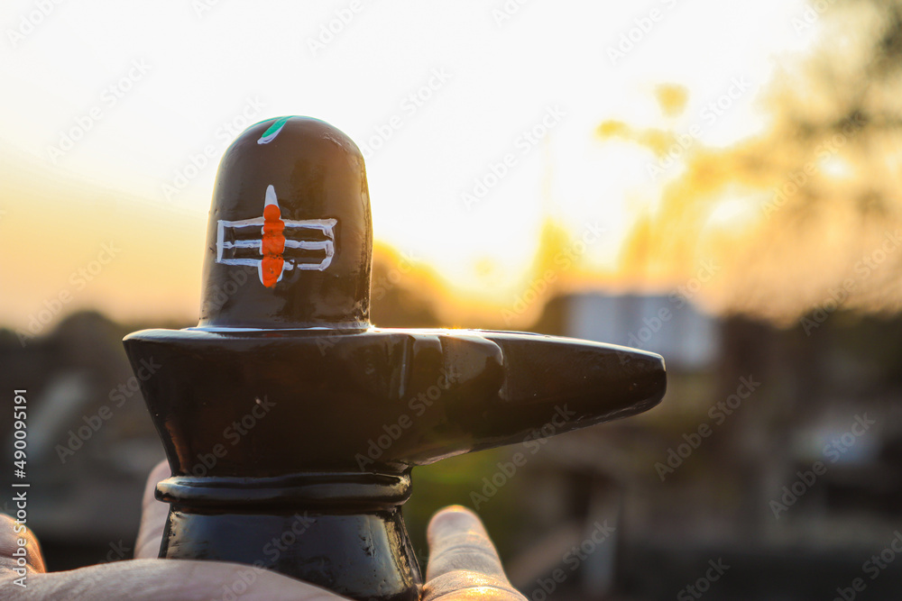

Mahadeva
Nataraja

Hindus believe his powers of destruction and recreation are used even now to destroy the illusions and imperfections of this world, paving the way for beneficial change. According to Hindu belief, this destruction is not arbitrary, but constructive. Shiva is therefore seen as the source of both good and evil and is regarded as the one who combines many contradictory elements.
Shiva is known to have untamed passion, which leads him to extremes in behaviour. Sometimes he is an ascetic, abstaining from all wordly pleasures. At others
The extra eye represents the wisdom and insight that Shiva has. It is also believed to be the source of his untamed energy. On one occasion, when Shiva was distracted in the midst of worship by the love god, Kama, Shiva opened his third eye in anger. Kama was consumed by the fire that poured forth, and only returned to life when Parvati intervened.
This signifies Shiva's power over the most dangerous creatures in the world. Some traditions also say that the snake represents Shiva's power of destruction and recreation. The snake sheds its skin to make way for new, smooth skin.
 >
>
The vibhuti are three lines drawn horizontally across the forehead in white ash. They represent Shiva's all-pervading nature, his superhuman power and wealth. Also, they cover up his powerful third eye. Members of Shaivism often draw vibhuti lines across their forehead.
 >
>
he three-pronged trident represents the three functions of the Hindu triumvirate. While other gods are depicted in lavish surroundings, Shiva is dressed in simple animal skin and in austere settings, usually in a yogic position. Parvati, whenever she is present, is always at the side of Shiva. Their relationship is one of equality.
 >
>